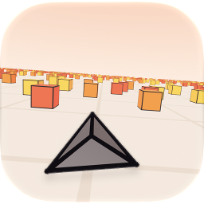

Cube Dash
An endless dodging game for iPhone, iPad and Mac. You fly forward, faster every second, and steer between the cubes. Touch one and the run is over.
How to play
Steer: hold the left or right side of the screen. On a Mac, use the arrow keys or A and D. Game controllers work too.
Classic is just you and your reflexes. Advanced adds a shield that takes one hit and a meter that slows time: swipe up or tap the hourglass (on a Mac, press Up or W).
Pause: the pause button at the top left, or Esc on a Mac.
Common questions
Do purchases make the game easier? No. Vehicles and tracks only change how the game looks. Speed, hitboxes and scores are the same for everyone.
I bought something on another device. How do I get it here? Open the Shop or Settings and choose Restore Purchases. Your purchases follow your Apple Account across iPhone, iPad and Mac.
Why don't I see the leaderboards? Sign in to Game Center in your device's Settings, then open Cube Dash again.
Can I turn the music off? Yes: Settings, then Music. Sound effects and haptics have their own switches.
Get in touch
Found a bug or have an idea? Open an issue on GitHub. Please say which device you're on and what happened.